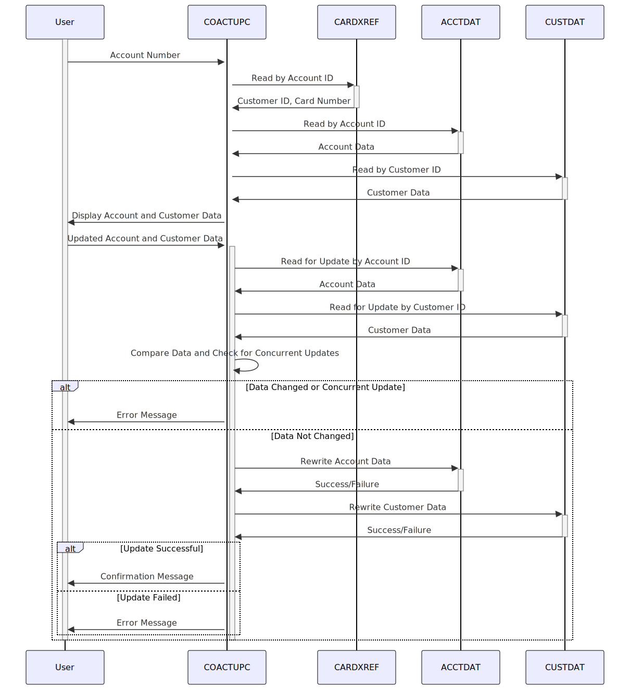

Gerado em: 1º de outubro de 2024
Título do Documento: Especificação do Programa de Atualização de Conta CardDemo
Descrição Resumida: O Programa de Atualização de Conta CardDemo é um programa COBOL que permite que usuários autorizados visualizem e atualizem informações de contas de clientes. O programa recupera informações do cliente e da conta de arquivos VSAM com base no número da conta fornecido, exibe as informações para o usuário, permite modificações, valida os dados de entrada e atualiza os arquivos VSAM com as alterações após a confirmação.
Histórias do Usuário: Como representante de atendimento ao cliente, preciso visualizar e atualizar as informações da conta do cliente para poder auxiliá-los em suas consultas e solicitações.
Épico Relacionado: 2 - Gestão de Contas
Requisitos Técnicos:
COACTUP.AAAA-MM-DD e são válidas.XXX-XX-XXXX e segue as regras do SSN.(XXX) XXX-XXXX e se o código de área é válido.CARDXREF usando o ID da conta como chave. Se encontrado, extrair o ID do cliente e o número do cartão.ACCTDAT usando o ID da conta como chave.CUSTDAT usando o ID do cliente como chave.ACCTDAT com intenção de atualização.CUSTDAT com intenção de atualização.ACCTDAT com as novas informações da conta.CUSTDAT com as novas informações do cliente.READ with UPDATE para bloquear os registros durante o processo de atualização.EXEC CICS HANDLE ABEND para lidar com abends.RESP e RESP2 para verificar erros.CICS SEND MAP e RECEIVE MAP para interagir com o usuário.BMS são usados para definir os layouts de tela.Modelos Relacionados
ACCOUNT-RECORD: Representa os dados da conta.
ACCT-ID Numeric(11,0): ID da conta.ACCT-ACTIVE-STATUS Alphanumeric(1): Status da conta (Ativo/Inativo).ACCT-CURR-BAL Numeric(10,2): Saldo atual da conta.ACCT-CREDIT-LIMIT Numeric(10,2): Limite de crédito.ACCT-CASH-CREDIT-LIMIT Numeric(10,2): Limite de crédito em dinheiro.ACCT-OPEN-DATE Alphanumeric(10): Data de abertura da conta (AAAA-MM-DD).ACCT-EXPIRAION-DATE Alphanumeric(10): Data de vencimento da conta (AAAA-MM-DD).ACCT-REISSUE-DATE Alphanumeric(10): Data de reemissão da conta (AAAA-MM-DD).ACCT-CURR-CYC-CREDIT Numeric(10,2): Crédito do ciclo atual.ACCT-CURR-CYC-DEBIT Numeric(10,2): Débito do ciclo atual.ACCT-GROUP-ID Alphanumeric(10): ID do grupo da conta.CUSTOMER-RECORD: Representa os dados do cliente.
CUST-ID Numeric(9,0): ID do cliente.CUST-FIRST-NAME Alphanumeric(25): Primeiro nome do cliente.CUST-MIDDLE-NAME Alphanumeric(25): Nome do meio do cliente.CUST-LAST-NAME Alphanumeric(25): Sobrenome do cliente.CUST-ADDR-LINE-1 Alphanumeric(50): Endereço linha 1 do cliente.CUST-ADDR-LINE-2 Alphanumeric(50): Endereço linha 2 do cliente.CUST-ADDR-LINE-3 Alphanumeric(50): Endereço linha 3 do cliente.CUST-ADDR-STATE-CD Alphanumeric(2): Código do estado do cliente.CUST-ADDR-COUNTRY-CD Alphanumeric(3): Código do país do cliente.CUST-ADDR-ZIP Alphanumeric(10): CEP do cliente.CUST-PHONE-NUM-1 Alphanumeric(15): Número de telefone 1 do cliente.CUST-PHONE-NUM-2 Alphanumeric(15): Número de telefone 2 do cliente.CUST-SSN Numeric(9,0): Número do Seguro Social do cliente.CUST-GOVT-ISSUED-ID Alphanumeric(20): ID emitido pelo governo do cliente.CUST-DOB-YYYY-MM-DD Alphanumeric(10): Data de nascimento do cliente (AAAA-MM-DD).CUST-EFT-ACCOUNT-ID Alphanumeric(10): ID da conta EFT do cliente.CUST-PRI-CARD-HOLDER-IND Alphanumeric(1): Indicador do titular do cartão principal.CUST-FICO-CREDIT-SCORE Numeric(3,0): Pontuação de crédito FICO do cliente.CARD-XREF-RECORD: Representa os dados de referência cruzada do cartão.
XREF-CARD-NUM Alphanumeric(16): Número do cartão.XREF-CUST-ID Numeric(9,0): ID do cliente.XREF-ACCT-ID Numeric(11,0): ID da conta.Configurações:
LIT-ACCTFILENAME: ACCTDAT - Nome do arquivo para o arquivo Mestre da Conta.LIT-CUSTFILENAME: CUSTDAT - Nome do arquivo para o arquivo Mestre do Cliente.LIT-CARDXREFNAME-ACCT-PATH: CXACAIX - Nome do arquivo para o arquivo de Referência Cruzada do Cartão, acessado por meio de um índice alternativo com base no ID da conta.Melhorias de Código:
Melhorias de Segurança:
Diagrama Conceitual:
–Made by “Smart Engineering” (by Compass.UOL)–